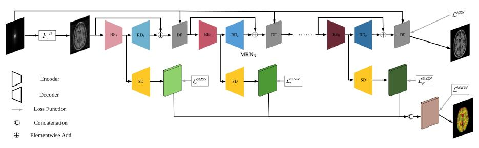

今日，实验室博士生孙立言，硕士生樊志文共同一作完成的论文“Joint CS-MRI Reconstruction and Segmentation with a Unified Deep Network”被IPMI接收，这是我院第一篇被IPMI接收的论文。
在大数据时代对MRI数据的快速获取和自动分析的需求逐渐增长。虽然压缩感知磁共振成像(即CS-MRI)已经被广泛研究并通过减少采集k空间的数据加速成像过程，但是在目前的CS-MRI领域的应用中，分割任务常常被忽视。在文中，作者测试了CS-MRI在自动分割模型里的效果并且提出一个统一的深度神经网络框架-SegNetMRI，然后把这个框架应用到CS-MRI重建和分割问题中来。SegNetMRI的构建基于MRI重建子网络和MRI分割子网络，其中重建子网络由几个级联起来的编码解码单元构成，分割子网络有同样的编解码结构。两个子网络需要预训练并且在共享编码器的情况下进行权重的微调。每个模块的分割结果通过卷积融合成最终分割结果。通过实验证明我们的模型在压缩感知的情况下可以提升重建和分割的性能。

国际医学影像信息处理会议（International Conference on Information Processing in Medical Imaging，IPMI）是医学影像分析最顶级的会议之一（另一为MICCAI），两年召开一次，且限定人数为120左右，文章也只接受60多篇。 IPMI的会议设计是一切学术为先，接收的文章主要偏重方法的创新，理论性强，比较晦涩难懂；因此要彻底理解某篇文章需要时间充分交流。为此，IPMI允许在oral talk之后无时间限制提问，任何人可以向讲者提出任何问题直到没有问题为止，这也使得IPMI被公认为医学影像分析领域最具特色的会议。
厦门大学SmartDSP实验室是一所专注于研究机器学习、模式识别、智能数据处理以及医学医疗影像处理与分析的团队。本篇论文由丁兴号，黄悦，John Paisley三位老师共同指导完成。